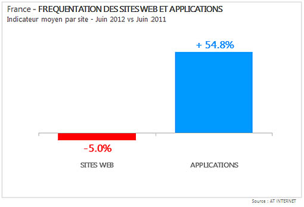

Les Applications Mobiles de demain
About Me
Emmanuel DEMEY
@EmmanuelDemey
emmanuel.demey@atos.net
Ingénieur Etude & Développement
Technical Direction - Atos
Quelques Chiffres
Quelques Chiffres

3 types d'applications
le Match !
Application Native
Avantages
- Adaptabilité parfaite avec l'OS
- Meilleur performance
- Monétisation de l'application
- Utilisation de language utilisé en entreprise
- Meilleur controle de l'Interface Utilisateur
- Moins d'accès Réseau
Application Native
Inconvénients
- Développement spécifique pour chaque OS
- Restriction de contenu
- Obligation d'Installation, et de mise à jour
- Cout de développement élevé
- Différentes versions d'une même technologie
- Des eco-systèmes moins importants
Application WEB
Avantages
- Un seul Développement
- Un déploiement immédiat pour toutes les plateformes
- Développement HTML5/JS/CSS
- Indépendant des Stores
- Des économies sur le coût de développement
- Très grande communauté derrière les technos WEB
- Persistence des données
- Mise à jour facile
Application WEB
Inconvénients
- Performance
- Accès au Système
- Spécification de l'HTML5 très longue
- UI moins "sexy"
- Peu de visibilité sur les Stores
- Trop de Frameworks JavaScript
- Compatibilité avec les différents navigateurs
2 versions spécifiques
Le Responsive Design

Conception d'un design Responsive
- Construction d'une Grille Fluide
- Recherche des points de rupture
- Ecriture des styles qui corrigent les points des ruptures
- Activation de ces styles en fonction de conditions.
Les Grilles Fluides
- Utiliser des tailles relatives
- Utiliser les blocs flottants, permettant un agencement libre
- ne pas oublier l'alignement vertical (polices)
Design Old School
<html>
<body>
<div id="wrapper">
<div>Bloc 1<div>
<div>Bloc 2<div>
<div>
</body>
</html>
#wrapper{
width: 960px;
}
div {
width: 480px;
font-size: 24px
float: left;
}
Fluid Design
<html>
<body>
<div id="wrapper">
<div>Bloc 1<div>
<div>Bloc 2<div>
<div>
</body>
</html>
#wrapper{
width: 95%;
font-size: 100%;
margin: 0 auto;
}
div {
width: 50%;
font-size: 1.5em; /*24px/16px*/
float: left;
}
Les ennuis commencent
<html>
<body>
<div id="wrapper">
<div><p>Bloc 1</p><div>
<div>Bloc 2<div>
<div>
</body>
</html>
#wrapper{
width: 95%;
font-size: 100%;
margin: 0 auto;
}
div {
width: 50%;
font-size: 1.5em; /*24px/16px*/
float: left;
}
p {
font-size: 1.08em; /*26px/24px*/
}
Grid Frameworks
- lessframework
- columnal.com
- cssgrid.net
- getskeleton.com
Les Média Queries
- Apparu avec HTML4/CSS2
- Conditionner le chargement d'une CSS en fonction du client
Media Types
Spécifier le rendu d'un document en fonction d'un média

Un peu d'histoire (au temps du HTML4 et CSS2)
<html>
<head>
<link rel="stylesheet" media="screen" href="screen.css"/>
<link rel="stylesheet" media="print" href="print.css"/>
</head>
<body></body>
</html>
@media print{
.menu {
display: none;
}
body{
color: black;
}
}
Media Types en CSS2
- all
- braille
- embossed
- handheld
- projection
- screen
- speech
- tty
- tv
10 Media Types

Les Médias Queries
<html>
<head>
<link rel="stylesheet" media="screen and (max-width: 640px)"
href="screen.css"/>
</head>
<body></body>
</html>
@media screen and (max-width: 640px){
.menu {
display: none;
}
body{
color: black;
}
}
Propriétés
- color
- color-index
- aspect-ratio
- device-aspect-ratio
- device-height
- device-width
- grid
- height
- monochrome
- orientation
- resolution
- scan
- width
Expression Multiple
<html>
<head>
<link rel="stylesheet" href="screen.css"/>
</head>
<body></body>
</html>
@media screen and (max-width: 640px)
and (min-width: 300px){
.menu {
display: none;
}
body{
color: black;
}
}
1 CSS pour 2 différents médias
<html>
<head>
<link rel="stylesheet" href="screen.css"/>
</head>
<body></body>
</html>
@media handheld and (color),
screen and (color){
.menu {
display: none;
}
body{
color: black;
}
}
Le mot clé NOT
<html>
<head>
<link rel="stylesheet" href="screen.css"/>
</head>
<body></body>
</html>
@media not screen and (color){
.menu {
display: none;
}
body{
color: black;
}
}
A la différence des 10 Media Types (CSS 2.1)
En CSS3...
Compatibilité
Pour les mauvais élèves, possibilité d'utiliser des polyfills : css3-mediaqueries.js, adapt.js, jquery.mediaqueries.js
Quelques lectures

Quelques lectures
- http://unstoppablerobotninja.com/entry/fluid-images/
- http://alisapart.com/articles/responsive-web-design
- mediaqueri.es
- smashingmagazine.com/2011/07/22/responsive-web-design-techniques-tools-and-design-strategies
- http://zomigi.com/blog/essential-considerations-for-crafting-quality-media-queries/
- http://palantir.net/blog/scalable-navigation-patterns-responsive-web-design
- http://designhack.net/articles/css/sass-and-media-queries-what-you-can-and-cant-do
- http://responsive.is
Démo
It probably was the biggest strategic mistake we made.
Mark Zuckerberg
We could probably save 70% of our development budget by switching to a single, cross-platform client, but we would probably lose 80% of our users.
Phil Libin, Evernote CEO
Les questions à se poser
- Votre application doit-elle être publiée sur les Stores ?
- A-t-elle besoin de beaucoup de fonctionnalités natives ?
- Application fluide, avec des animations ?
- Voulez-vous la vendre ?
- Doit-elle fonctionner en mode offline ?
- Sera-t-elle une application utilisée frequemment ?
Et les applications Hybrides ?

- Développement en HTML(5)/CSS/JS
- Possibilité d'utiliser des frameworks JavaScript
- Accès aux fonctionnalités du téléphone en JavaScript
- Support de 10 plateformes différentes
- Projet Open-Source (Licence Apache)
- Soutenu par la société Adobe
Devices supportés
Contributeurs
- Nitobi
- IBM
- RIM
- Microsoft
- Sony Ericsson
- Symbian
- Palm
- Sencha
- Palm
Apache Cordova API
- Sensors
- Data
- Events
Sensors
- GPS
- Accelerometer
- Compass
- Network
- Camera
Data
- Contacts
- Media
- File System
- Notification
Events
- deviceready
- online/offline
- batterycritical/batterylow/batterystatus
- startcallbutton/endcallbutton
- volumedownbutton/volumeupbutton
- pause/resume
Quel framework JavaScript utiliser ?
- jQuery Mobile
- jQTouch
- Sencha
- XUI
- Wink
- QooXDoo
- Zepto
- JoApp
Démo
Geolocalisation API
L'Objet Position
{
coords : {
latitude: "",
longitude: "",
altitude: "",
accuracy: "",
altitudeAccuracy: "",
heading: "",
speed: ""
},
Timestamp : ""
}
Geolocalisation API
geolocation.getCurrentPosition
document.addEventListener("deviceready", onDeviceReady, false);
function onDeviceReady(){
navigator.geolocalisation
.getCurrentPosition(onSuccess, onError);
}
function onSuccess(position){
alert(position.coords.latitude);
}
function onError(error){
alert(error.message);
}
Geolocalisation API
geolocation.watchPosition
document.addEventListener("deviceready", onDeviceReady, false);
function onDeviceReady(){
navigator.geolocalisation
.watchPosition(onSuccess, onError,
{frequency: 1000});
}
function onSuccess(position){
//je bougerai mon petit bonhomme sur ma carte
}
function onError(error){
alert(error.message);
}
Notification API
function onDeviceReady(){
navigator.notification
.alert("Message", onSuccess, "Titre" , "OK");
navigator.notification
.confirm("Message", onConfirmSuccess,
"Titre" , "OK,Cancel");
navigator.notification.beep(3);
navigator.notification.vibrate(500);
}
function onConfirmSuccess(button){ }
Contacts API
function onDeviceReady(){
var contact = navigator.contacts.create();
contact.displayName="Emmanuel DEMEY";
contact.nickname="Emmanuel DEMEY";
var name = new ContactName();
name.givenName="Emmanuel";
name.familyName="Demey"
contact.name = name;
contact.emails = [new ContactField('home',
'email@atos.net', false)];
contact.save();
}
Camera API
function onDeviceReady(){
navigator.camera.getPicture(onSuccess, onFail, {
quality: 50,
destiantiontype: Camera.DestinationType.FILE_URI
});
}
function onSuccess(imageURI) {
$("img").attr("src", imageURI);
}
PhoneGap Builder
Application publiée sur les Stores ?
Des milliers d'applications développées

Quelques lectures
Points non abordés
- jQuery Mobile
- jQTouch
- Sencha
- XUI
- Wink
- QooXDoo
- Zepto
- JoApp
- Brighcove
- Marmalade
- Titanium
- Corona
- Zepto.js, MoSync, Metismo, appcelerator, applause